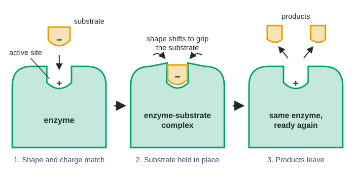

Every second, each of your cells runs thousands of chemical reactions: breaking sugars apart, building proteins, copying DNA. Almost none of them would happen fast enough to keep you alive without enzymes. This page is about one question: how does an enzyme pick out the one molecule it works on from the thousands of other molecules around it? The short answer is shape and charge.
Enzymes are biological catalysts
A catalyst is a substance that speeds up a chemical reaction and comes out of the reaction unchanged. Because it is unchanged, one catalyst molecule can act again and again: a typical enzyme handles from a few to thousands of substrate molecules every second.
An enzyme is a catalyst made by a living thing. Almost all enzymes are proteins. A few are made of RNA instead; the ribosome, which builds proteins, uses RNA to catalyze its key reaction. Many enzyme names end in -ase and say what they act on: lactase acts on lactose, a protease on proteins, a lipase on lipids.
The molecule an enzyme acts on is its substrate. The enzyme changes the substrate into one or more products. For lactase, the substrate is lactose (milk sugar), and the products are glucose and galactose.
The active site: a pocket made by folding
Recall from the proteins topic that a chain of amino acids folds into a specific three-dimensional shape. Side chains attract or repel each other: nonpolar side chains cluster away from water, polar side chains form hydrogen bonds, and oppositely charged side chains attract.
That folding leaves a small pocket or groove on the surface of every enzyme. This is the active site, where the substrate binds and the reaction happens. The active site is lined by a particular set of side chains, often from amino acids that are far apart in the chain but brought close together by the folding (Figure 1).

Two things follow. First, the active site is only a small part of the enzyme, but the whole protein's folding creates it. Second, anything that changes the folding can change the active site, even if it happens far away from it.
Specificity: shape and charge must both match
An enzyme acts on one substrate, or a small family of similar substrates. This is called enzyme specificity. It comes from two kinds of match between the substrate and the active site:
- Shape. The substrate must fit into the pocket. A molecule that is too large, or has a group sticking out where the pocket wall is, cannot settle in.
- Chemistry. The charges and polarity must line up. A negatively charged group on the substrate is attracted to a positively charged side chain in the active site. A polar –OH group can form a hydrogen bond with a polar side chain. Nonpolar parts sit against nonpolar side chains.
Size alone is not enough. Lactose, maltose and sucrose are all two-sugar molecules of almost the same size, and lactase still acts only on lactose. The difference is in the details: which way each –OH group points, and which bond joins the two sugars. Only lactose puts its polar groups where lactase's side chains can bond to them.
| Side chain lining the active site | Attracts this part of a substrate | Repels or mismatches |
|---|---|---|
| Positively charged (lysine, arginine) | Negatively charged groups | Positively charged groups |
| Negatively charged (glutamate, aspartate) | Positively charged groups | Negatively charged groups |
| Polar, uncharged (serine, with an –OH) | Polar groups that can hydrogen bond, like –OH | Large nonpolar groups |
| Nonpolar (alanine, leucine) | Nonpolar rings and chains | Charged and polar groups |
The enzyme-substrate complex and induced fit
When the substrate settles into the active site, it is held by weak attractions: hydrogen bonds, ionic attractions between opposite charges, and nonpolar clustering. The enzyme and its bound substrate together are called the enzyme-substrate complex. It is short-lived. Because the attractions are weak, the products can leave once the reaction is done.
An early model, the lock-and-key model, pictured the active site as a rigid mold, like a lock that only one key fits. Experiments showed something more interesting: many enzymes change shape as the substrate binds. The active site closes slightly around the substrate and grips it more tightly. This is the induced fit model. The tighter grip holds particular bonds of the substrate right next to particular side chains of the enzyme, which is where the chemistry happens.
| Lock-and-key model | Induced fit model | |
|---|---|---|
| Active site shape | Fixed, rigid | Flexible; changes as the substrate binds |
| What binding does to the enzyme | Nothing | Closes the active site around the substrate |
| Evidence it explains | Specificity | Specificity, plus measured shape changes when the substrate binds |
| Status today | A useful first picture | The accepted refinement |
After the reaction, the products no longer match the active site as well as the substrate did, so they float away. The enzyme returns to its starting shape, and the active site is free for the next substrate molecule.
When the shape changes, the enzyme changes
Because specificity depends on shape and charge, anything that changes the active site changes what the enzyme can do:
- Heat. High temperatures break the weak bonds that hold the fold, denaturing the protein. The active site loses its shape.
- pH. Adding or removing hydrogen ions can change the charges of side chains, so attractions inside the protein and with the substrate change.
- A swapped amino acid. If a change in the gene swaps one amino acid in the active site, the shape or charge there can change. A swap far away can also matter if it loosens the fold.
You will meet heat, pH and other molecules that bind enzymes in detail in topic 3.3.
Reading enzyme data
Exam questions often show what happens when one amino acid in an enzyme is swapped. The trick is to ask: did the change affect shape, charge, or both, and which substrates were affected?
Worked example. An enzyme's active site holds a positively charged lysine. With its normal substrate, which has a negative end, it forms 50 µmol of product per minute. With a look-alike substrate that has an uncharged end, it forms 2 µmol per minute.
A variant with lysine swapped for glutamate (negative) forms 1 µmol per minute from the normal substrate and 2 µmol per minute from the look-alike.
Step 1: compare to the original as a percentage. Normal substrate: 1 ÷ 50 × 100 = 2% of the original. Look-alike: 2 ÷ 2 × 100 = 100%.
Step 2: ask what changed. The swap reversed the charge at one spot. The substrate whose binding depended on that charge collapsed; the one that never used it was unaffected.
Step 3: conclude. The attraction between lysine's positive charge and the substrate's negative end is part of what makes the normal substrate fit. If both substrates had dropped, a change in the pocket's shape would be the better explanation.
How the exam tests this
- Explain specificity using both shape and the chemical character (charge, polarity) of the active site.
- Predict what a change in an active-site amino acid does to substrate binding, and use data to tell a charge effect from a shape effect.
- Use data on enzyme shape (for example, a gap that closes when the substrate binds) as evidence for induced fit.